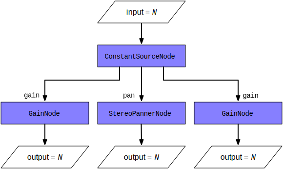

Controlling multiple parameters with ConstantSourceNode
This article demonstrates how to use a ConstantSourceNode to link multiple parameters together so they share the same value, which can be changed by setting the value of the ConstantSourceNode.offset parameter.
You may sometimes want multiple audio parameters to be linked so they share the same value while being changed somehow. For example, perhaps you have a set of oscillators, two of which need to share the same configurable volume, or you have a filter applied to specific inputs but not all of them. You could use a loop and change the value of each affected AudioParam one at a time. Still, there are two drawbacks to doing it that way: first, that's extra code that, as you're about to see, you don't have to write; and second, that loop uses valuable CPU time on your thread (likely the main thread), and there's a way to offload all that work to the audio rendering thread, which is optimized for this kind of work and may run at a more appropriate priority level than your code.
The solution is simple, and it involves using an audio node type that, at first glance, doesn't look all that useful: ConstantSourceNode.
The technique
Using a ConstantSourceNode is an effortless way to do something that sounds like it might be hard. You need to create a ConstantSourceNode and connect it to all of the AudioParams whose values should be linked to always match each other. Since ConstantSourceNode's offset value is sent straight through to all of its outputs, it acts as a splitter for that value, sending it to each connected parameter.
The diagram below shows how this works; an input value, N, is set as the value of the ConstantSourceNode.offset property. The ConstantSourceNode can have as many outputs as necessary; in this case, we've connected it to three nodes: two GainNodes and a StereoPannerNode. So N becomes the value of the specified parameter (gain for the GainNodes and pan for the StereoPannerNode.

As a result, every time you change N (the value of the input AudioParam, the values of the two GainNode.gain properties and the value of the StereoPannerNode 's pan properties are all set to N as well.
Example
Let's take a look at this technique in action. In this simple example, we create three OscillatorNode objects. Two of them have adjustable gain, controlled using a shared input control. The other oscillator has a fixed volume.
HTML
The HTML content for this example is primarily a checkbox, shaped as an actual button, to toggle the oscillator tones on and off and an <input> element of type range to control the volume of two of the three oscillators.
<div class="controls">
<input type="checkbox" id="playButton">
<label for="playButton">Activate: </label>
<label for="volumeControl">Volume: </label>
<input type="range" min="0.0" max="1.0" step="0.01"
value="0.8" name="volume" id="volumeControl">
</div>
</div>
<p>Toggle the checkbox above to start and stop the tones, and use the volume control to
change the volume of the notes E and G in the chord.</p>
JavaScript
Now let's look at the JavaScript code, a piece at a time.
Setting up
Let's start by looking at the global variable initialization.
// Useful UI elements
const playButton = document.querySelector("#playButton");
const volumeControl = document.querySelector("#volumeControl");
// The audio context and the node will be initialized after the first request
let context = null;
let oscNode1 = null;
let oscNode2 = null;
let oscNode3 = null;
let constantNode = null;
let gainNode1 = null;
let gainNode2 = null;
let gainNode3 = null;
These variables are:
context-
The
AudioContextin which all the audio nodes live; it will be initialized during after a user-action. -
References to the play button and volume control elements.
oscNode1,oscNode2, andoscNode3-
The three
OscillatorNodes used to generate the chord. gainNode1,gainNode2, andgainNode3-
The three
GainNodeinstances which provide the volume levels for each of the three oscillators.gainNode2andgainNode3will be linked together to have the same, adjustable, value using theConstantSourceNode. constantNode-
The
ConstantSourceNodeused to control the values ofgainNode2andgainNode3together.
Now let's look at the setup() function, called when the user toggles the play button for the first time; it handles all the initialization tasks to set up the audio graph.
function setup() {
context = new AudioContext();
gainNode1 = new GainNode(context, {
gain: 0.5
});
gainNode2 = new GainNode(context, {
gain: gainNode1.gain.value
});
gainNode3 = new GainNode(context, {
gain: gainNode1.gain.value
});
volumeControl.value = gainNode1.gain.value;
constantNode = new ConstantSourceNode(context, { offset: volumeControl.value });
constantNode.connect(gainNode2.gain);
constantNode.connect(gainNode3.gain);
constantNode.start();
gainNode1.connect(context.destination);
gainNode2.connect(context.destination);
gainNode3.connect(context.destination);
// All is set up. We can hook the volume control.
volumeControl.addEventListener("input", changeVolume, false);
}
First, we get access to the window's AudioContext, stashing the reference in context. Then we get references to the control widgets, setting playButton to reference the play button and volumeControl to reference the slider control that the user will use to adjust the gain on the linked pair of oscillators.
Next, the GainNode gainNode1 is created to handle the volume for the non-linked oscillator (oscNode1). We set that gain to 0.5. We also create gainNode2 and gainNode3, set their values to match gainNode1, then set the value of the volume slider to the same value, so it stays synchronized with the gain level it controls.
Once all the gain nodes are created, we create the ConstantSourceNode, constantNode. We connect its output to the gain AudioParam on both gainNode2 and gainNode3, and we start the constant node running by calling its start() method; now it's sending the value 0.5 to the two gain nodes' values, and any change to constantNode.offset will automatically set the gain of both gainNode2 and gainNode3 (affecting their audio inputs as expected).
Finally, we connect all the gain nodes to the AudioContext's destination, so that any sound delivered to the gain nodes will reach the output, whether that output be speakers, headphones, a recording stream, or any other destination type.
Then we assign a handler for the volume slider's input event (see Controlling the linked oscillators to see the very short changeVolume() method).
Right after declaring the setup() function, we add a handler to the play checkbox's change event (see Toggling the oscillators on and off for more on the togglePlay() method), and the stage is set. Let's see how the action plays out.
playButton.addEventListener("change", togglePlay, false);
Toggling the oscillators on and off
Because OscillatorNode doesn't support the notion of being in a paused state, we have to simulate it by terminating the oscillators and starting them again when the user clicks on the play checkbox again to toggle them back on. Let's look at the code.
function togglePlay(event) {
if (!playButton.checked) {
stopOscillators();
} else {
// If it is the first start, initialize the audio graph
if (!context) {
setup();
}
startOscillators();
}
}
If the playButton widget is checked, we're already playing the oscillators, and we call stopOscillators() to shut down the oscillators. See Stopping the oscillators below for that code.
If the playButton widget is checked, indicating that we're currently paused, we call startOscillators() to start the oscillators playing their tones. Below, we describe that code under Starting the oscillators.
Controlling the linked oscillators
The changeVolume() function, the event handler for the slider control for the gain on the linked oscillator pair, looks like this:
function changeVolume(event) {
constantNode.offset.value = volumeControl.value;
}
That simple function controls the gain on both nodes. All we have to do is set the value of the ConstantSourceNode's offset parameter. That value becomes the node's constant output value, fed to all its outputs, gainNode2 and gainNode3.
While this is an elementary example, imagine having a 32 oscillator synthesizer with multiple linked parameters in play across many patched nodes. Shortening the number of operations to adjust them all will prove invaluable for both code size and performance.
Starting the oscillators
When the user clicks the play/pause toggle button while the oscillators aren't playing, the startOscillators() function gets called.
function startOscillators() {
oscNode1 = new OscillatorNode(context, {
type: "sine",
frequency: 261.625565300598634 // middle C$
});
oscNode1.connect(gainNode1);
oscNode2 = new OscillatorNode(context, {
type: "sine",
frequency: 329.627556912869929 // E
});
oscNode2.connect(gainNode2);
oscNode3 = new OscillatorNode(context, {
type: "sine",
frequency: 391.995435981749294 // G
});
oscNode3.connect(gainNode3);
oscNode1.start();
oscNode2.start();
oscNode3.start();
}
Each of the three oscillators is set up the same way, creating the OscillatorNode by calling the OscillatorNode() constructor with two options:
- Set the oscillator's
typeto"sine"to use a sine wave as the audio waveform. - Set the oscillator's
frequencyto the desired value; in this case,oscNode1is set to a middle C, whileoscNode2andoscNode3round out the chord by playing the E and G notes.
Then, we connect the new oscillator to the corresponding gain node.
Once all three oscillators have been created, they're started by calling each one's ConstantSourceNode.start() method in turn.
Stopping the oscillators
Stopping the oscillators when the user toggles the play state to pause the tones is as simple as stopping each node.
function stopOscillators() {
oscNode1.stop();
oscNode2.stop();
oscNode3.stop();
}
Each node is stopped by calling its ConstantSourceNode.stop() method.